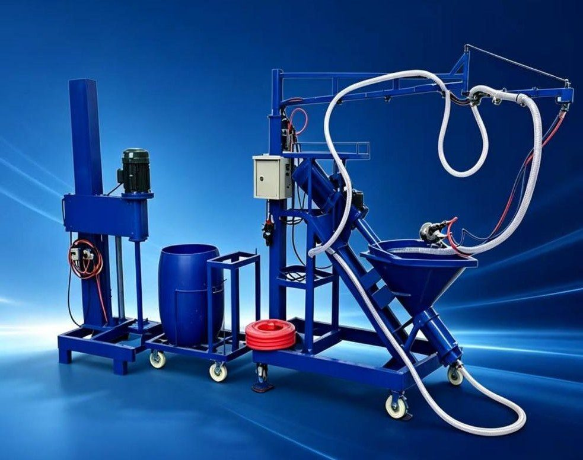

Trước khi mua máy phun GRC: 10 câu cần hỏi nhà cung cấp
Báo giá máy phun GRC thường chỉ có vài dòng thông số và một con số năng suất rất đẹp. Mười câu hỏi dưới đây giúp tránh những bất ngờ khi máy về: sai điện áp, thiếu máy nén khí, năng suất không như kỳ vọng, phụ tùng hao mòn nhanh.

Một bộ máy phun GRC không đắt so với giá trị nó tạo ra, nhưng mua sai thì rất tốn: máy về không chạy được với điện xưởng, phải mua thêm thiết bị ngoài dự kiến, hay năng suất thực chỉ bằng một phần nhỏ con số trong báo giá. Dưới đây là 10 câu nên hỏi bằng văn bản trước khi đặt cọc – và cách đọc câu trả lời.
1. Máy được chế tạo cho điện áp và tần số nào?
Lưới điện công nghiệp tại Việt Nam là 3 pha 380 V / 50 Hz. Báo giá từ nước ngoài đôi khi ghi điện áp khác (ví dụ 480 V / 60 Hz cho thị trường khác). Yêu cầu nhà cung cấp xác nhận điện áp cho cả máy phun và máy trộn, ghi rõ trong hóa đơn chiếu lệ (PI) và gửi ảnh nhãn động cơ.
2. Con số năng suất được tính trong điều kiện nào?
Báo giá thường ghi năng suất tính bằng m²/giờ. Hãy hỏi rõ con số đó là thời gian phun thuần (chưa tính cấp vữa, vệ sinh, dừng máy), ứng với độ dày bao nhiêu và tay nghề thợ ra sao. Cách tự kiểm tra nhanh là quy về lưu lượng vữa:
3. Bộ máy gồm những gì – máy trộn có nằm trong giá không?
Hỏi danh sách đóng gói chi tiết: máy phun, tay cần, súng phun, ống khí, ống vữa (dài bao nhiêu mét), lưỡi cắt và con lăn dự phòng… Đặc biệt hỏi rõ máy trộn tốc độ cao có trong giá hay tính riêng – đây là thiết bị bắt buộc vì vữa GRC cần trộn đồng nhất trong 30 – 60 giây.
4. Súng phun có bộ cắt sợi không, dùng sợi loại nào?
- Súng phun có tích hợp bộ cắt sợi hay phải mua riêng?
- Dùng sợi roving bao nhiêu tex (ví dụ 2.400 tex, 4.800 tex)?
- Tỷ lệ sợi / vữa điều chỉnh được trong khoảng nào (GRC phun thường cần 3 – 5%)?
- Chiều dài sợi cắt điều chỉnh thế nào (thường bằng số lượng và khoảng cách lưỡi dao trên con lăn)?
5. Cần máy nén khí công suất bao nhiêu – có kèm theo không?
Máy nén khí thường không nằm trong bộ máy nhưng lại bắt buộc để chạy súng phun, mô-tơ cắt sợi và bộ rung phễu. Hỏi lưu lượng (m³/phút) và áp suất yêu cầu, model khuyến nghị. Thiếu khí là nguyên nhân phổ biến khiến sợi cắt không đều và năng suất giảm. Đây là khoản đầu tư thêm cần đưa vào ngân sách ngay từ đầu.
6. Sợi thủy tinh kháng kiềm đi kèm có chứng nhận gì?
Nếu mua kèm sợi, hỏi trọng lượng cuộn, độ mảnh (tex), hàm lượng ZrO₂ (nên từ khoảng 16% trở lên) và phiếu thử nghiệm của phòng thí nghiệm độc lập theo EN 15422. Sợi không kháng kiềm làm GRC giòn dần theo thời gian – lỗi chỉ lộ ra sau khi công trình đã bàn giao.
7. Bảo hành tính từ ngày nào, bao lâu, gồm những gì?
"Bảo hành 12 tháng" có thể tính từ ngày giao hàng, ngày nghiệm thu, hoặc – phổ biến với hàng nhập khẩu – từ ngày xếp hàng lên tàu ghi trên vận đơn (B/L). Với thời gian vận chuyển, thông quan và lắp đặt, thời gian bảo hành thực tế tại xưởng có thể ngắn hơn đáng kể. Hỏi rõ mốc tính, thời hạn tối đa, và bảo hành áp dụng cho bộ phận nào (động cơ, bơm, tủ điện).
8. Phụ tùng hao mòn bền bao lâu và mua ở đâu?
Bơm trục vít có stator và rotor là vật tư hao mòn, tuổi thọ thường tính theo diện tích phun (vài nghìn m²). Mô-tơ súng phun, lưỡi cắt, con lăn cao su, đầu phun cũng cần thay định kỳ. Hỏi tuổi thọ dự kiến, thời gian giao phụ tùng và nên mua sẵn bộ dự phòng nào kèm máy – để máy không phải nằm chờ hàng vài tuần giữa mùa cao điểm.
9. Có những tài liệu và chứng từ gì?
- Hướng dẫn vận hành bằng tiếng Anh (hoặc tiếng Việt), sơ đồ điện, video vận hành.
- Danh sách đóng gói (packing list) – đối chiếu trọng lượng, số kiện, thể tích với báo giá và PI.
- Giấy chứng nhận xuất xứ (C/O): với hàng từ Trung Quốc, C/O mẫu E giúp hưởng thuế suất ưu đãi theo Hiệp định thương mại tự do ASEAN – Trung Quốc. Hỏi rõ nhà cung cấp cấp được mẫu E hay chỉ C/O thông thường.
- Chứng nhận CE của thiết bị (nếu có) – lưu ý dấu CE trên động cơ chưa phải chứng nhận cho cả máy.
10. Đóng gói, thời gian giao và hỗ trợ chạy thử ra sao?
- Quy cách đóng gói (thùng gỗ?), số kiện, trọng lượng, kích thước – để tính chi phí vận chuyển và bốc dỡ.
- Thời gian sản xuất và giao đến cảng.
- Có hỗ trợ đào tạo vận hành, chạy thử lần đầu không – tại chỗ hay từ xa qua video? Ai hỗ trợ khi máy gặp sự cố?
Và 3 câu cần tự hỏi mình
- Điện và khí: xưởng đã có nguồn 3 pha đủ công suất cho máy phun, máy trộn và máy nén khí chưa?
- Vật tư: đã có nguồn cát khô đúng cỡ, sợi AR và xi măng ổn định chưa? Máy tốt đến đâu cũng không bù được vật liệu đầu vào biến động.
- Con người: ai sẽ là thợ phun chính, ai phụ trách hiệu chỉnh máy và ghi sổ chất lượng mỗi ca?
Nguồn tham khảo
- Hiệp định Thương mại Hàng hóa ASEAN – Trung Quốc (ACFTA) – quy tắc xuất xứ, C/O mẫu E
- EN 15422 – Precast concrete products: Specification of glassfibres for reinforcement of mortars and concretes
- PCI MNL-130 – Manual for Quality Control for Plants and Production of Glass Fiber Reinforced Concrete Products